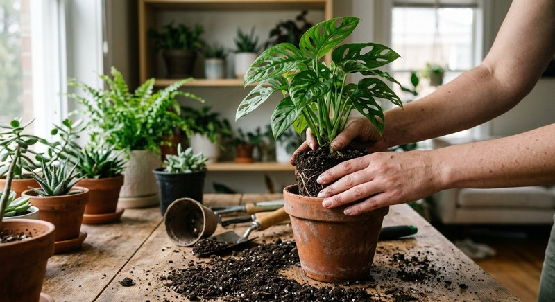

Базовый уход · 5 мин чтения
Подкормка комнатных растений после пересадки: сроки и правила
После пересадки корневой системе нужно освоить новый субстрат. Дополнительное удобрение в этот момент не всегда помогает: в свежем грунте может быть запас питания, а повреждённые корни чувствительнее к солям.
Материал обновлён 24.10.2026 · Справочная информация, не заменяет инструкцию на упаковке.

Проверьте грунт и состояние корней
Посмотрите упаковку субстрата: производитель может указывать, что смесь уже заправлена удобрениями и сколько времени дополнительная подкормка не требуется. Учитывайте и причину пересадки — плановая смена горшка отличается от экстренной замены грунта после загнивания корней.
Если корни были повреждены, растение вянет или не закрепилось, сначала обеспечьте стабильную влажность, дренаж и подходящее освещение. Не подкармливайте растение, которое ещё не восстановилось после стресса.
Когда возвращаться к питанию
Подождите появления признаков устойчивого роста и сверяйтесь с инструкцией нового грунта и удобрения. Время зависит от состава субстрата, размера горшка, вида растения и характера пересадки. Универсальной даты вроде «ровно через неделю» нет.
Когда начинаете подкормки, не компенсируйте паузу повышенной дозой. Разведите средство по этикетке и наблюдайте за реакцией. Если состояние ухудшается, прекратите добавлять удобрение и проверьте влажность, корни и освещение.
Подходит ли Семяздрав после пересадки
В описании продавца Семяздрав указан как средство, которое помогает поддержать растение при пересадке. Это не отменяет осторожности: соблюдайте дозировку на флаконе, выбирайте допустимый способ внесения и не удобряйте автоматически растение с повреждёнными корнями.
Для обычной плановой пересадки удобнее заранее подготовить подходящий грунт и чистый горшок с дренажными отверстиями. После пересадки растению нужны спокойные условия и аккуратный уход, а не несколько новых препаратов одновременно.
Первые две недели: режим щадящего ухода
Сразу после пересадки задача растения — восстановить контакт корней с субстратом, а не наращивать листья. Поставьте горшок в привычное по свету место без прямых полуденных лучей, поливайте умеренно по мере просыхания и не тревожьте ком проверками «как там корни». Свежий грунт, как правило, уже содержит стартовый запас питания, поэтому удобрение в первые недели не ускоряет приживание, а раствор солей вокруг повреждённых при пересадке корневых волосков может его замедлить. Опрыскивание листьев чистой водой допустимо для видов, которые его любят, но это уход за влажностью, а не подкормка.
Если пересадка была вынужденной — из-за закисания грунта или проблем с корнями, щадящий период ещё важнее. Сначала стабильный полив и свет, и только потом питание. Похожая логика работает и у рассады: сеянцам после пикировки тоже дают время укорениться, об этом подробнее в статье подкормка рассады после пикировки.
Когда возвращаться к обычному графику
Сигнал к возвращению подкормок — не дата в календаре, а поведение растения: появились новые листья или побеги, корни показались у дренажных отверстий, полив стал расходоваться в обычном ритме. У быстрорастущих видов это может занять пару недель, у медленных и крупных — заметно дольше, особенно если пересадка пришлась на осень или зиму. Начинайте с обычной дозы по этикетке, а не с «компенсирующей» усиленной: пропущенные недели не нужно навёрстывать.
Дальше растение возвращается в общий ритм коллекции — с частотой по фазе роста и сезону, как описано в материале как часто подкармливать комнатные растения. Если вместо роста листья желтеют, не добавляйте удобрение автоматически: сначала проверьте полив и корни по чек-листу статьи почему желтеют листья. Пересадка плюс перелив плюс подкормка — самая частая тройка ошибок у заботливых владельцев.
Запишите дату пересадки на стикере на горшке и там же отметьте, когда увидели первый новый лист. Эта пара дат со временем покажет реальный срок адаптации каждого вида в ваших условиях лучше любых усреднённых советов из интернета.
Крупные растения после перевалки в больший горшок адаптируются быстрее тех, у которых сильно тревожили корни, но правило наблюдения за новым ростом одинаково полезно и в том, и в другом случае.
- свет привычный, без прямого полуденного солнца;
- полив умеренный, по просыханию, без болота;
- удобрение — только после признаков нового роста;
- первая доза обычная, без компенсации за паузу;
- при пожелтении сначала диагностика, потом питание.
Частые вопросы
Можно ли добавить удобрение прямо в новый грунт?
Только если это предусмотрено инструкцией конкретного удобрения и субстрата. Не смешивайте препараты с грунтом по собственной схеме.
Почему нельзя удобрять сразу после пересадки?
Повреждённые корни могут быть чувствительнее, а новый грунт часто уже содержит питание. В первую очередь проверьте инструкцию субстрата.
Можно ли полить с удобрением сразу при пересадке, чтобы помочь?
Лучше не стоит: свежий субстрат обычно уже содержит питание, а повреждённые корневые волоски чувствительны к солям. Полейте чистой водой для осадки грунта, а подкормку отложите до нового роста.
Прошёл месяц, а роста нет. Дать удобрение для стимула?
Сначала проверьте свет, влажность грунта и корни. Отсутствие роста после пересадки чаще связано с условиями или сезоном, и удобрение без диагноза проблему не решит.